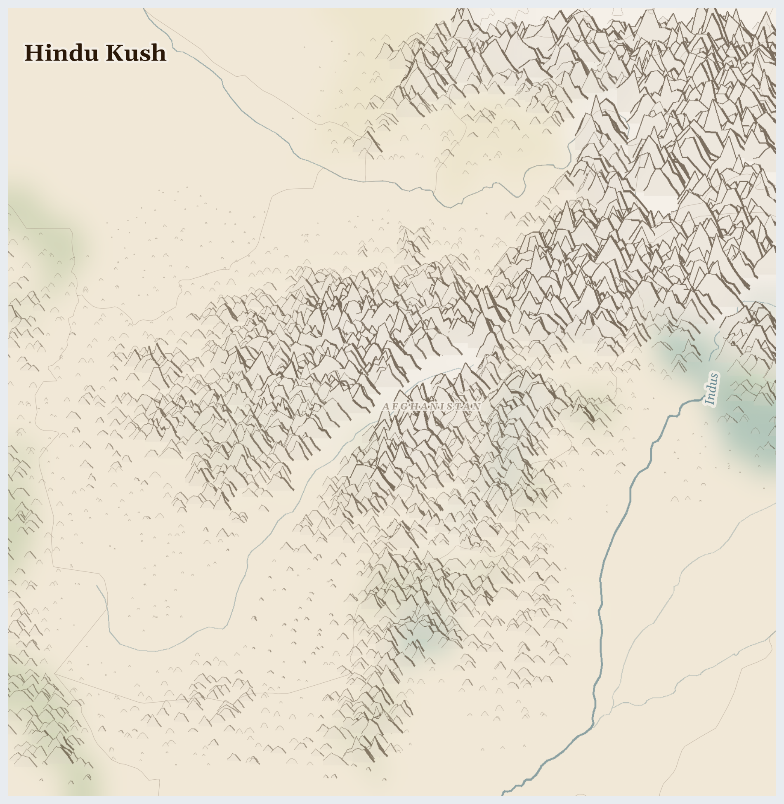

Hindu Kush
Afghanistan
Palearctic
This is Afghanistan — a land of huge snowy mountains with valleys folded between them. The mountains are so tall they catch the clouds. When the snow melts in spring, it becomes the rivers that water everything below.
How Life Works Here
In the valleys, families grow wheat, almonds, and some of the sweetest melons and grapes anywhere. High in one valley, people dig for lapis lazuli — a stone as blue as the evening sky, which artists have prized for thousands of years. Herders move their sheep and goats up the mountains in summer and down again before the snow.
Qanat maintenance communities (muqannis), Downstream farming households in Helmand, Kandahar, Herat in Afghanistan.
Farming households in Helmand/Kandahar who lost poppy income without replacement (2022 ban), Farmers in northeastern provinces where ban enforcement is weakest (12,800 ha in). …
small mines and child miners under Taliban control, Pakistani middlemen traders in Peshawar in Afghanistan.
What Is Happening
Afghanistan has had war for many years, and although the big fighting has quietened, the hard times have not: there has not been enough rain, many parents cannot find work, and lots of families do not have enough food. Girls are not allowed to go to school past primary age, which is a great sadness. But Afghan people are strong helpers of each other — neighbours share flour, and some brave teachers find quiet ways to keep girls learning.
Something Wonderful
The blue in very old paintings — even ones in Europe, painted hundreds of years ago — often came from Afghan lapis lazuli, carried along the Silk Road on camels. One mountain valley coloured the world's art.
Let's Do Something Together
Sharing the Grain
Count out 20 pieces of rice or pasta into a bowl — this is all the food a family has. Give 5 to one person, 5 to another, and 5 to a third. The last 5 are for tomorrow. But what if someone takes 10? Now some people have nothing. This is what happens when food is not shared fairly.
- rice, pasta, or dried beans (20 pieces)
- small bowls
For grown-ups
Food insecurity is rarely about total supply — it is about distribution and access. Conflict disrupts markets, blockades prevent deliveries, and armed groups divert humanitarian aid.
Let Us Pray Together
God, help everyone to have enough food. Show us how to share.
Leader: We pray for those who are hungry. For the millions across Hindu Kush who cannot meet their daily food needs.
All: Lord, hear our prayer.
Leader: We pray for the displaced. For the millions driven from their homes.
All: Lord, hear our prayer.
Leader: We pray for water and land. For the land itself, its rivers and aquifers stretched thin across the region.
All: Lord, hear our prayer.
Leader: We pray for Afghanistan. Especially for Afghanistan, facing the most severe convergence of crises in this region.
All: Lord, hear our prayer.
As the deer longs for the water brooks, so longs my soul for you, O God. My soul is athirst for God, even for the living God; when shall I come before the presence of God?
Collect
Almighty God, who sent your Holy Spirit to be the life and light of your Church: open our hearts to the riches of your grace, that we may bring forth the fruit of the Spirit in love and joy and peace; through Jesus Christ your Son our Lord, who is alive and reigns with you, in the unity of the Holy Spirit, one God, now and for ever.
Amen.
Talk About It
Somewhere in Afghanistan is a girl your age who loves learning but cannot go to school right now. What would you save for her from your school day if you could?
One Thing We Can Do
When you do your homework tonight, do it twice as gladly — once for you, and once as a prayer for the girls of Afghanistan, that school doors open for them again.